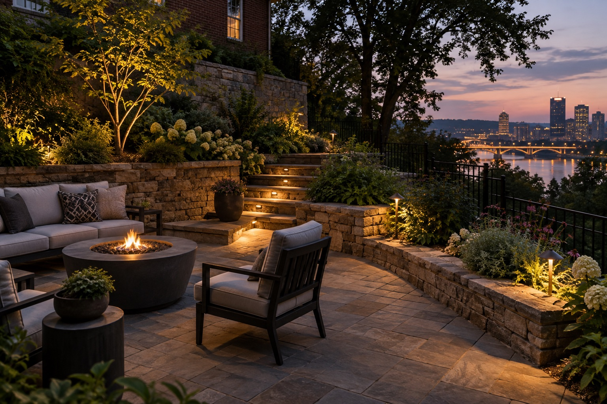

Look closer at the a place to gather concept
This original visual concept explores how terrace, steps & garden can shape the feeling of a home after dark. It is an illustrative design concept for inspiration.

What makes the scene work
The strongest outdoor lighting uses a few clear points of attention and leaves room for shadow. In this concept, the relationship between terrace, steps & garden suggests a layered view rather than a flat wash of brightness.
For a real property, the effect would need to be adapted to the architecture, materials, planting, and how people move through the space. A fixture that looks right from the sidewalk may need a different aim when viewed from a front window or patio seat.
What to ask for your own home
Which feature should lead the eye first? Where do you want the route to feel more legible? What should remain quiet after sunset? Those questions are more useful than starting with a fixed number of lights.
Use this image as a conversation starter. Share photos of your home from the street and from the spaces you use most. Lumascapes can discuss how a lighting approach might translate to your Pittsburgh-area property.
Browse the full 36-image gallery, read the lighting guide, or start a conversation.